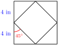

Subsection Finding an Angle
While watching her niece at the playground, Francine wonders how steep the slide is. She happens to have a tape measure and her calculator with her, and finds that the slide is 77 inches high and covers a horizontal distance of 136 inches, as shown below.
Francine knows that one way to describe the steepness of an incline is to calculate its slope, which in this case is
\begin{equation*}
\dfrac {\Delta y}{\Delta x} = \dfrac{77}{136} = 0.5662
\end{equation*}
However, Francine would really like to know what angle the slide makes with the horizontal. She realizes that the slope she has just calculated is also the tangent of the angle she wants.
If we know the tangent of an angle, can we find the angle? Yes, we can: locate the key labeled \(\tan^{-1}\) on your calculator; it is probably the second function above the TAN key. Enter
\(\qquad\qquad\qquad\)2nd TAN 0.5662
and you should find that
\begin{equation*}
\text{tan}^{-1} (0.5662) = 29.52 \degree\text{.}
\end{equation*}
This means that \(29.52 \degree\) is the angle whose tangent is \(0.5662\text{.}\) We read the notation as "inverse tangent of 0.5662 is 29.52 degrees."
When we find tan\(^{-1}\) of a number, we are finding an angle whose tangent is that number. Similarly, sin\(^{-1}\) and cos\(^{-1}\) are read as “inverse sine†and “inverse cosine.†They find an angle with the given sine or cosine.
Example 2.33.
Find the angle whose sine is \(0.6834\text{.}\)
Solution.
Enter 2nd SIN 0.6834 into your calculator to find
\begin{equation*}
\sin^{-1} (0.6834) = 43.11\degree
\end{equation*}
So \(43.11\degree\) is the angle whose sine is \(0.6834\text{.}\) Or we can say that
\begin{equation*}
\sin (43.11\degree) = 0.6834
\end{equation*}
You can check the last equation on your calculator.
Checkpoint 2.36.
Write the following fact in two different ways: \(68\degree\) is the angle whose cosine is \(0.3746\text{.}\)
Answer.
\(\cos (68\degree) = 0.3746\) or \(\cos^{-1}(0.3746) = 68\degree\)
Example 2.37.
Find the angle of inclination of a hill if you gain 400 feet in elevation while traveling half a mile.
Solution.
A sketch of the hill is shown at right. (Recall that 1 mile = 5280 feet.)
\begin{align*}
\sin (\theta) \amp = \dfrac {400}{2640} = 0.\overline{15}\\
\theta \amp = \sin^{-1} (0.\overline{15}) = 8.71\degree
\end{align*}
The angle of inclination of the hill is about \(8.7\degree\text{.}\)
Checkpoint 2.38.
The tallest living tree is a coast redwood named Hyperion, at 378.1 feet tall. If you stand 100 feet from the base of the tree, what is the angle of elevation of your line of sight to the top of the tree? Round your answer to the nearest degree.
Subsection The Special Angles
The trigonometric ratios for most angles are irrational numbers, but there are a few angles whose trig ratios are “nice†values. You already know one of these values: the sine of \(30\degree\text{.}\) Because the sides of a right triangle are related by the Pythagorean theorem, if we know any one of the trig ratios for an angle, we can find the others.
Recall that the side opposite a \(30\degree\) angle is half the length of the hypotenuse, so \(\sin (30\degree) = \dfrac{1}{2}\text{.}\)
The figure at right shows a 30-60-90 triangle with hypotenuse of length 2. The opposite side has length 1, and we can calculate the length of the adjacent side.
\begin{align*}
1^2 + b^2 \amp = 2^2 \\
b^2 \amp = 2^2 - 1^2 = 3\\
b \amp = \sqrt{3}
\end{align*}
Now we know the cosine and tangent of \(30\degree\text{.}\)
\begin{equation*}
\cos (30\degree) = \dfrac {\text{adjacent}}{\text{hypotenuse}} = \dfrac{\sqrt{3}}{2} \qquad \tan (30\degree) = \dfrac {\text{opposite}}{\text{adjacent}} = \dfrac{1}{\sqrt{3}}
\end{equation*}
These are exact values for the trig ratios, but we can also find decimal approximations. Use your calculator to verify the following approximate values.
\begin{align*}
\amp \blert{\text{exact value}} \amp\amp \blert{\text{approximation}}\\
\cos (30\degree) \amp = \dfrac{\sqrt{3}}{2} \amp\amp \approx 0.8660\\
\tan (30\degree) \amp = \dfrac{1}{\sqrt{3}} \amp\amp \approx 0.5774
\end{align*}
The angles \(30\degree\text{,}\) \(60\degree\text{,}\) and \(45\degree\) are “special†because we can easily find exact values for their trig ratios, and use those exact values to find exact lengths for the sides of triangles with those angles.
Example 2.40.
Matterhorn Chocolate bars are sold in boxes shaped like triangular prisms. The two triangular ends of a box are equilateral triangles with 8 centimeter sides. When stacking the boxes on a shelf, the second level will be a triangle’s altitude above bottom level. Find the exact length of the triangle’s altitude, \(h\text{.}\)
Solution.
The altitude divides the triangle into two 30-60-90 right triangles as shown in the figure. The altitude is adjacent to the \(30\degree\) angle, and the hypotenuse of the right triangle is 8 centimeters. Thus,
\begin{align*}
\cos \left(30 \degree\right) \amp = \dfrac {\text{adjacent}}{\text{hypotenuse}} \amp \amp \blert{\text{Fill in the values.}}\\
\dfrac{\sqrt{3}}{2} \amp = \dfrac{h}{8} \amp \amp \blert{\text{Multiply both sides by 8.}}\\
h \amp = 8\left(\dfrac{\sqrt{3}}{2}\right) = 4\sqrt{3}
\end{align*}
The altitude is \(4\sqrt{3}\) centimeters long, which is approximately 6.9 cm.
From this exact answer, we can find approximations to any degree of accuracy we like. You can check that \(4\sqrt{3} \approx 6.9282\text{,}\) so the altitude is approximately 6.9 centimeters long.
Checkpoint 2.41.
Use the figure in the previous example to find exact values for the sine, cosine, and tangent of \(60\degree\text{.}\)
Answer.
\(\sin (60\degree) = \dfrac{\sqrt{3}}{2}\text{,}\) \(~~\cos (60\degree) = \dfrac{1}{2}\text{,}\) \(~~\tan (60\degree) = \sqrt{3}\)
There is one more special angle: \(45\degree\text{.}\) We find the trig ratios for this angle using an isosceles right triangle. Because the base angles of an isosceles triangle are equal, they must both be \(45\degree\text{.}\)
The figure shows an isosceles right triangle with equal sides of length 1. You can use the Pythagorean theorem to show that the hypotenuse has length \(\sqrt{2}\text{,}\) so the trig ratios for \(45\degree\) are
\begin{align*}
\sin (45\degree) \amp = \dfrac {\text{opposite}}{\text{hypotenuse}} = \dfrac{1}{\sqrt{2}} \approx 0.7071\\
\cos (45\degree) \amp = \dfrac {\text{adjacent}}{\text{hypotenuse}} = \dfrac{1}{\sqrt{2}} \approx 0.7071\\
\tan (45\degree )\amp = \dfrac {\text{opposite}}{\text{adjacent}} = 1
\end{align*}
Subsection The Trigonometric Ratios for the Special Angles
Here is a summary of the trig ratios for the special angles.
| Angle |
Sine |
Cosine |
Tangent |
| \(30\degree\) |
\(\dfrac{1}{2} = 0.5 \) |
\(\dfrac{\sqrt{3}}{2} \approx 0.8660\) |
\(\dfrac{1}{\sqrt{3}} \approx 0.5774\) |
| \(45\degree\) |
\(\dfrac{1}{\sqrt{2}} \approx 0.7071\) |
\(\dfrac{1}{\sqrt{2}} \approx 0.7071\) |
\(1\) |
| \(60\degree\) |
\(\dfrac{\sqrt{3}}{2} \approx 0.8660\) |
\(\dfrac{1}{2} = 0.5 \) |
\(\sqrt{3} \approx 1.732\) |
You should be familiar with the exact values for these trig ratios. A good way to remember them is to know the two special triangles shown below. From these triangles, you can always write down the three trig ratios for the special angles.
You should also be able to recognize their decimal approximations.
Example 2.43.
If \(\cos (\alpha) \gt \dfrac{\sqrt{3}}{2}\text{,}\) what can we say about \(\alpha\text{?}\)
Solution.
As an angle increases from \(0\degree\) to \(90\degree\text{,}\) its cosine decreases. Now, \(\cos (30\degree) = \dfrac{\sqrt{3}}{2}\text{,}\) so if \(\cos (\alpha) \gt \dfrac{\sqrt{3}}{2}\text{,}\) then \(\alpha\) must be less than \(30\degree\text{.}\)
Checkpoint 2.44.
If \(1 \lt \tan (\beta) \lt \sqrt{3}\text{,}\) what can we say about \(\beta\text{?}\)
Answer.
\(45\degree \lt \beta \lt 60\degree \)
Review the following skills you will need for this section.
Algebra Refresher 2.5.
1. \(\:\sqrt{2}\sqrt{2}\)
2. \(\:\dfrac{3}{\sqrt{3}}\)
4. \(\:\sqrt{\dfrac{3}{4}}\)
Rationalize the denominator.
5. \(\:\dfrac{1}{\sqrt{2}}\)
6. \(\:\dfrac{2}{\sqrt{3}}\)
7. \(\:\dfrac{6}{\sqrt{3}}\)
8. \(\:\dfrac{4}{\sqrt{8}}\)
\(\underline{\qquad\qquad\qquad\qquad}\)
Algebra Refresher Answers
\(\displaystyle 2\vphantom{\dfrac{\sqrt{3}}{2}}\)
\(\displaystyle \sqrt{3}\vphantom{\vphantom{\dfrac{\sqrt{3}}{2}}}\)
\(\displaystyle 2\sqrt{2}\vphantom{\dfrac{\sqrt{3}}{2}}\)
\(\displaystyle \dfrac{\sqrt{3}}{2}\)
\(\displaystyle \dfrac{\sqrt{2}}{2}\)
\(\displaystyle \dfrac{2\sqrt{3}}{3}\)
\(\displaystyle 2\sqrt{3}\vphantom{\dfrac{\sqrt{3}}{2}}\)
\(\displaystyle \sqrt{2}\vphantom{\dfrac{\sqrt{3}}{2}}\)
Exercises Homework 2.3
In these Homework Problems, we use the following standard notation for a right triangle: in \(\triangle ABC\text{,}\) \(\angle C\) is a right angle. The side opposite \(\angle C\) has length \(c\text{,}\) and so on. (See the figure at right.)
Exercise Group.
For Problems 1–4, solve the triangle. Round answers to hundredths.
Exercise Group.
For Problems 5–10,
Sketch the right triangle described.
Solve the triangle.
5.
\(A = 42\degree,~ c = 26\)
6.
\(B = 28\degree,~ c = 6.8\)
7.
\(B = 33\degree,~ a = 300\)
8.
\(B = 79\degree,~ a = 116\)
9.
\(A = 12\degree,~ a = 4\)
10.
\(A = 50\degree,~ a = 10\)
Exercise Group.
For Problems 11–16,
Sketch the right triangle described.
Without doing the calculations, list the steps you would use to solve the triangle.
11.
\(B = 53.7\degree,~ b = 8.2\)
12.
\(B = 80\degree,~ a = 250\)
13.
\(A = 25\degree,~ b = 40\)
14.
\(A = 15\degree,~ c = 62\)
15.
\(A = 64.5\degree,~ c = 24\)
16.
\(B = 44\degree,~ b = 0.6\)
Exercise Group.
For Problems 17–22, find the labeled angle. Round your answer to tenths of a degree.
Exercise Group.
For Problems 23–28, evaluate the expression and sketch a right triangle to illustrate.
23.
\(\sin^{-1} (0.2)\)
24.
\(\cos^{-1} (0.8)\)
25.
\(\tan^{-1} (1.5)\)
26.
\(\tan^{-1} (2.5)\)
27.
\(\cos^{-1} (0.2839)\)
28.
\(\sin^{-1} (0.4127)\)
Exercise Group.
For Problems 29–32, write two different equations for the statement.
29.
The cosine of \(15 \degree\) is \(0.9659\text{.}\)
30.
The sine of \(70 \degree\) is \(0.9397\text{.}\)
31.
The angle whose tangent is \(3.1445\) is \(65 \degree\text{.}\)
32.
The angle whose cosine is \(0.0872\) is \(85 \degree\text{.}\)
33.
Evaluate the expressions, and explain what each means.
\begin{equation*}
\sin^{-1} (0.6),~~~ (\sin 6\degree)^{-1}
\end{equation*}
34.
Evaluate the expressions, and explain what each means.
\begin{equation*}
\cos^{-1} (0.36),~~~ (\cos 36\degree)^{-1}
\end{equation*}
Exercise Group.
For Problems 35–38,
Sketch a right triangle that illustrates the situation. Label your sketch with the given information.
Choose the appropriate trig ratio and write an equation, then solve the problem.
35.
The gondola cable for the ski lift at Snowy Peak is 2458 yards long and climbs 1860 feet. What angle with the horizontal does the cable make?
36.
The Leaning Tower of Pisa is 55 meters in length. An object dropped from the top of the tower lands 4.8 meters from the base of the tower. At what angle from the horizontal does the tower lean?
37.
A mining company locates a vein of minerals at a depth of 32 meters. However, there is a layer of granite directly above the minerals, so they decide to drill at an angle, starting 10 meters from their original location. At what angle from the horizontal should they drill?
38.
The birdhouse in Carolyn’s front yard is 12 feet tall, and its shadow at 4 pm is 15 feet 4 inches long. What is the angle of elevation of the sun at 4 pm?
Exercise Group.
For Problems 39–42,
Sketch the right triangle described.
Solve the triangle.
39.
\(a = 18, ~ b = 26\)
40.
\(a = 35, ~ b = 27\)
41.
\(b = 10.6 ,~ c = 19.2\)
42.
\(a = 88, ~ c = 132\)
Exercise Group.
For Problems 43–48,
Make a sketch that illustrates the situation. Label your sketch with the given information.
Write an equation and solve the problem.
43.
The Mayan pyramid of El Castillo at Chichen Itza in Mexico has 91 steps. Each step is 26 cm high and 30 cm deep.
What angle does the side of the pyramid make with the horizontal?
What is the distance up the face of the pyramid, from base to top platform?
44.
An airplane begins its descent when its altitude is 10 kilometers. The angle of descent should be \(3\degree\) from horizontal.
How far from the airport (measured along the ground) should the airplane begin its descent?
How far will the airplane travel on its descent to the airport?
45.
A communications satellite is in a low earth orbit (LOE) at an altitude of 400 km. From the satellite, the angle of depression to earth’s horizon is \(19.728\degree\text{.}\) Use this information to calculate the radius of the earth.
46.
The first Ferris wheel was built for the 1893 Chicago world’s fair. It had a diameter of 250 feet, and the boarding platform, at the base of the wheel, was 14 feet above the ground. If you boarded the wheel and rotated through an angle of \(50\degree\text{,}\) what would be your height above the ground?
47.
To find the distance across a ravine, Delbert takes some measurements from a small airplane. When he is a short distance from the ravine at an altitude of 500 feet, he finds that the angle of depression to the near side of the ravine is \(56\degree\text{,}\) and the angle of depression to the far side is \(32\degree\text{.}\) What is the width of the ravine? (Hint: First find the horizontal distance from Delbert to the near side of the ravine.)
48.
The window in Francine’s office is 4 feet wide and 5 feet tall. The bottom of the window is 3 feet from the floor. When the sun is at an angle of elevation of \(64\degree\text{,}\) what is the area of the rectangular sunny spot on the floor? Assume that the edge of the sunny spot nearest the window is the same width as the window.
49.
Which of the following numbers are equal to \(\cos (45\degree)\text{?}\)
\(\displaystyle \dfrac{\sqrt{2}}{2}\)
\(\displaystyle \dfrac{1}{\sqrt{2}}\)
\(\displaystyle \dfrac{2}{\sqrt{2}}\)
\(\displaystyle \sqrt{2}\)
50.
Which of the following numbers are equal to \(\tan (30\degree)\text{?}\)
\(\displaystyle \sqrt{3}\)
\(\displaystyle \dfrac{1}{\sqrt{3}}\)
\(\displaystyle \dfrac{\sqrt{3}}{3}\)
\(\displaystyle \dfrac{3}{\sqrt{3}}\)
51.
Which of the following numbers are equal to \(\tan (60\degree)\text{?}\)
\(\displaystyle \sqrt{3}\)
\(\displaystyle \dfrac{1}{\sqrt{3}}\)
\(\displaystyle \dfrac{\sqrt{3}}{3}\)
\(\displaystyle \dfrac{3}{\sqrt{3}}\)
52.
Which of the following numbers are equal to \(\sin (60\degree)\text{?}\)
\(\displaystyle \dfrac{3}{\sqrt{2}}\)
\(\displaystyle \dfrac{\sqrt{3}}{2}\)
\(\displaystyle \dfrac{\sqrt{2}}{3}\)
\(\displaystyle \dfrac{2}{\sqrt{3}}\)
Exercise Group.
For Problems 53–58, choose all values from the list below that are exactly equal to, or decimal approximations for, the given trig ratio. (Try not to use a calculator!)
| \(\sin (30\degree)\) |
\(\cos (45\degree)\) |
\(\sin (60\degree)\) |
\(\tan (45\degree)\) |
\(\tan (60\degree)\) |
| \(~~~0.5000~~~\) |
\(~~~0.5774~~~\) |
\(~~~0.7071~~~\) |
\(~~~0.8660~~~\) |
\(~~~1.0000~~~\) |
| \(\dfrac{1}{\sqrt{2}}\) |
\(\dfrac{2}{\sqrt{2}}\) |
\(\dfrac{3}{\sqrt{2}}\) |
\(\dfrac{1}{2}\) |
\(\dfrac{\sqrt{2}}{2}\) |
| \(\dfrac{1}{\sqrt{3}}\) |
\(\dfrac{2}{\sqrt{3}}\) |
\(\dfrac{\sqrt{3}}{2}\) |
\(\sqrt{3}\) |
\(\dfrac{\sqrt{3}}{3}\) |
53.
\(\cos (30\degree)\)
54.
\(\sin (45\degree)\)
55.
\(\tan (30\degree)\)
56.
\(\cos (60\degree)\)
57.
\(\sin (90\degree)\)
58.
\(\cos (0\degree)\)
59.
Fill in the table from memory with exact values. Do you notice any patterns that might help you learn the values?
| \(\theta\) |
\(~~~0\degree~~~\) |
\(~~~30\degree~~~\) |
\(~~~45\degree~~~\) |
\(~~~60\degree~~~\) |
\(~~~90\degree~~~\) |
| \(\sin (\theta)\) |
\(~\) |
\(~\) |
\(~\) |
\(~\) |
\(~\) |
| \(\cos (\theta)\) |
\(~\) |
\(~\) |
\(~\) |
\(~\) |
\(~\) |
| \(\tan (\theta)\) |
\(~\) |
\(~\) |
\(~\) |
\(~\) |
\(~\) |
60.
Fill in the table from memory with decimal approximations to four places.
| \(\theta\) |
\(~~~0\degree~~~\) |
\(~~~30\degree~~~\) |
\(~~~45\degree~~~\) |
\(~~~60\degree~~~\) |
\(~~~90\degree~~~\) |
| \(\sin (\theta)\) |
\(~\) |
\(~\) |
\(~\) |
\(~\) |
\(~\) |
| \(\cos (\theta)\) |
\(~\) |
\(~\) |
\(~\) |
\(~\) |
\(~\) |
| \(\tan (\theta)\) |
\(~\) |
\(~\) |
\(~\) |
\(~\) |
\(~\) |
Exercise Group.
For Problems 61 and 62, compare the given value with the trig ratios of the special angles to answer the questions. Try not to use a calculator.
61.
Is the acute angle larger or smaller than \(45\degree\text{?}\)
\(\displaystyle \sin (\alpha) = 0.7\)
\(\displaystyle \tan (\beta) = 1.2\)
\(\displaystyle \cos (\gamma) = 0.65\)
62.
Is the acute angle larger or smaller than \(60\degree\text{?}\)
\(\displaystyle \cos (\theta) = 0.75\)
\(\displaystyle \tan (\phi) = 1.5\)
\(\displaystyle \sin (\psi) = 0.72\)
Exercise Group.
For Problems 63–72, solve the triangle. Give your answers as exact values.
63.
64.
65.
66.
67.
68.
69.
70.
71.
72.
73.
Find the perimeter of a regular hexagon if the apothegm is 8 cm long. (The apothegm is the segment from the center of the hexagon and perpendicular to one of its sides.)
Find the area of the hexagon.
74.
Triangle \(ABC\) is equilateral, and its angle bisectors meet at point \(P\text{.}\) The sides of \(\triangle ABC\) are 6 inches long. Find the length of \(AP\text{.}\)
75.
Find an exact value for the area of each triangle.
76.
Find an exact value for the perimeter of each parallelogram.
77.
Find the area of the outer square.
Find the dimensions and the area of the inner square.
What is the ratio of the area of the outer square to the area of the inner square?

78.
Find the area of the inner square.
Find the dimensions and the area of the outer square.
What is the ratio of the area of the outer square to the area of the inner square?